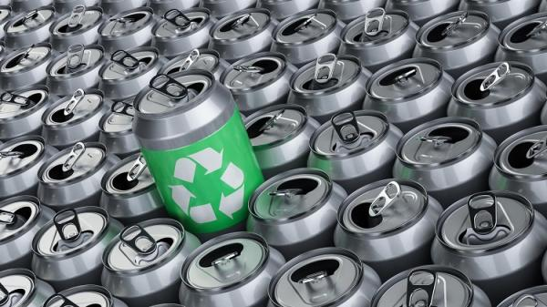

From the Firehose
Metales
El reciclaje de los metales contribuye significativamente a no empeorar el entorno medioambiental actual. Al reciclar chatarra, se reduce significativamente la contaminación de agua, aire y los desechos de la minería en un 70 por ciento. Asimismo, obtener aluminio reciclado reduce un 95 por ciento la contaminación del aire, ahorra un 90 por ciento de la energía consumida al elaborarlo y contribuye a la menor utilización de energía eléctrica, en comparación con el procesado de materiales vírgenes.
Heading
Aproximadamente, el 60 por ciento de acero nuevo producido en Norteamérica es elaborado con rechazo de hierro. Sólo en Estados Unidos, en 2004 las empresas de reciclaje de hierro viejo negociaron más de 130 millones de toneladas de productos reciclados destinados para el uso doméstico y exportación. Estos productos reciclados representaron aproximadamente 30.000 millones de dólares para una industria que emplea más de 30.000 personas en ese país.
Reciclando una lata de aluminio se ahorra la energía necesaria para mantener un televisor encendido durante tres horas, pues este metal se utiliza en todo tipo de utensilios de nuestro alrededor: instrumentos musicales, motores, aviones, automóviles, bicicletas, latas de bebidas y una diversidad de artículos caseros
Un coche de tamaño medio requiere aproximadamente. 800 kg. de acero y 130 kg. de metales no ferrosos. Si el nivel de propiedad de autos fuere en todo el mundo como en EE.UU., las propia producción automotriz se habría agotado por acabar todos las reservas conocidas de hierro. El reciclaje de los metales contribuye significantemente a no empeorar la situación actual de contaminación. Al reciclar la chatarra se reduce la contaminación del agua, aire y los desechos de la minería en un 70%. Obtener aluminio reciclado reduce un 95% la contaminación, y contribuye a la menor utilización de energía eléctrica, en comparación con el procesado de materiales vírgenes. Reciclando una lata de refresco se ahorra la energía necesaria para mantener un televisor encendido durante 3 horas.
Sub-heading

Una gran ventaja del reciclaje del metal, en relación al papel, es que ilimitado el número de veces que se puede reciclar. Sin embargo presenta una desventaja, no se puede reciclar en casa. Una vez allí se lo corta en trozos, se le somete al altas temperaturas y se le da la nueva forma deseada.
De los 784 millones de toneladas anuales producidas de acero en el mundo, cerca del 43% es reciclada proveniente de chatarra. Esto equivale al peso de 150 torres Eiffel o 1,2 millones de autos cada día.
En un año normal, la industria mundial del acero a través del reciclado, ahorra el equivalente a la energía requerida para 110 millones de hogares.
El acero es completamente reciclable al final de la vida útil del producto y podría ser reciclado un número ilimitado de veces, sin perder calidad.
Un producto de acero puede reciclarse a pesar de su origen. Es el material más reciclado del mundo, siendo reciclado más que el aluminio, el plástico y el vidrio sumados.
Sub-heading
El reciclaje de los metales contribuye significantemente a no empeorar la situación actual de contaminación, ya que al reciclar la chatarra se reduce la contaminación del agua, aire y los desechos en un 70%. Existe en todo el mundo una amplia infraestructura de chatarreros para reciclar acero desde hace ya 100 años. Esta infraestructura industrial, prepara todo tipo de chatarra para suministrarla a las industrias siderúrgicas y fundiciones, las cuales la funden, refinan y convierten en nuevo acero.
Las principales fuentes de chatarra de acero, provienen de obsolescencia de bienes de consumos, como automóviles viejos, electrodomésticos, latas y tarros de acero, construcciones y estructuras antiguas, sin olvidar también, la chatarra proveniente de mermas industriales. La tasa de reciclaje, definida como la relación de la cantidad de chatarra efectivamente reciclada y la cantidad de chatarra producida, es de alrededor de un 80%, en una base global.
El acero se degrada muy poco en los procesos de reciclados, por eso puede reciclarse un gran número de veces, siendo la única limitación el rendimiento del reciclado, el que está determinado por tres factores:
- La efectividad del proceso de recuperación de los usos previos.
- La efectividad del sistema de recolección y selección.
- La efectividad del sistema de recolección y selección.
Los productos de acero tienen una larga duración, es por ello que es un material con una alta demanda, la que no puede ser satisfecha en su totalidad mediante el proceso de reciclaje, es por eso se hace necesario producir nuevo acero como suplemento, a partir de las fuentes primarias de mineral de hierro.
Lorem, ipsum dolor.
La mayor parte de los metales que existen pueden fundirse y volver a procesare creando nuevos metales. Metales como aluminio, plomo, hierro, acero, cobre, plata y oro son reciclados fácilmente cuando no están mezclados con otras sustancias, porque pueden ser fundidos y cambiar de forma o adoptar la misma anterior. De estos materiales, el hierro es el que tiene mayor demanda comercial. El reciclaje del aluminio está incrementándose bastante debido a que una lata, producto de reciclaje, requiere sólo una parte de la energía necesaria para elaborar una lata similar con materas primas. Si recuperáramos todos estos metales serían una gran fuente de materias primas.
Los yacimientos (de donde se extrae industrialmente el metal), son depósitos de los mismos y están siendo poco a poco agotados. En los nuevos yacimientos se debe invertir mayor capital, ya que se encuentran mas adentrados en la corteza terrestre y en lugares muy remotos para el centro de producción. El cobre, desde los 80´s, procede de lugares como Chile, Zambia, Zaire, Papúa, Nueva-Guinea, lugares muy lejanos del centro de producción. En 1990, para obtener los casi 9 millones de toneladas de cobre que se produjeron hizo falta extraer y reprocesar 990 toneladas de mineral.
Los metales son componentes que han sido utilizados por el hombre desde la Era más remota, tanto así que les dieron nombres a algunas de ellas: La Edad del Bronce, La Edad del Hierro, la fiebre del Oro, etc. se han encontrado minas de silicio del final de la Edad de Piedra en el centro y noroeste de Europa. Los utensilios metálicos se funden y moldean desde tiempos prehistóricos, es lo que podríamos considerar un reciclaje primitivo.
Proceso de reciclado:
- Se recogen y clasifican los diferentes metales.
- Las latas de aluminio y acero se comprimen para llevarlas a la planta de reciclado.
- Las latas comprimidas se meten en una trituradora para desmenuzarlas.
- Un enorme imán que se sitúa sobre el metal, separa el acero del aluminio. Los dos metales tendrán una aventura diferente en su proceso de reciclaje.
- El aluminio se funde y se moldea en lingotes de 25 toneladas.
- Los lingotes de aluminio se funden y se pasan por rodillos para formar láminas finas, haciendo así latas nuevas.
- En el caso de acero por ejemplo, las latas de conserva están formadas un 99% de acero, forrado en el interior con una fina capa de estaño evitando así la oxidación del material que contienen.
- Los lingotes de acero se funden y pasan por rodillos para así formar láminas finas en hojas delgadas para latas nuevas.
- El acero puro se lava e introduce en la fundidora para hacer lingotes.
- Se colocan estas latas en un cubo con agua sometiéndolo a electricidad y sustancias químicas, la reacción obtenida es que el estaño flota separándolo del acero. Para continuar el proceso de reciclaje
- Objetos reciclables de metal:
- Latas de conservas
- Latas de cerveza
- Tapas de metal
- Botones de metal
- Papel aluminio
- Bolsa interior de la leche en polvo
- Alfileres
- Alambre
- Cacerolas de aluminio